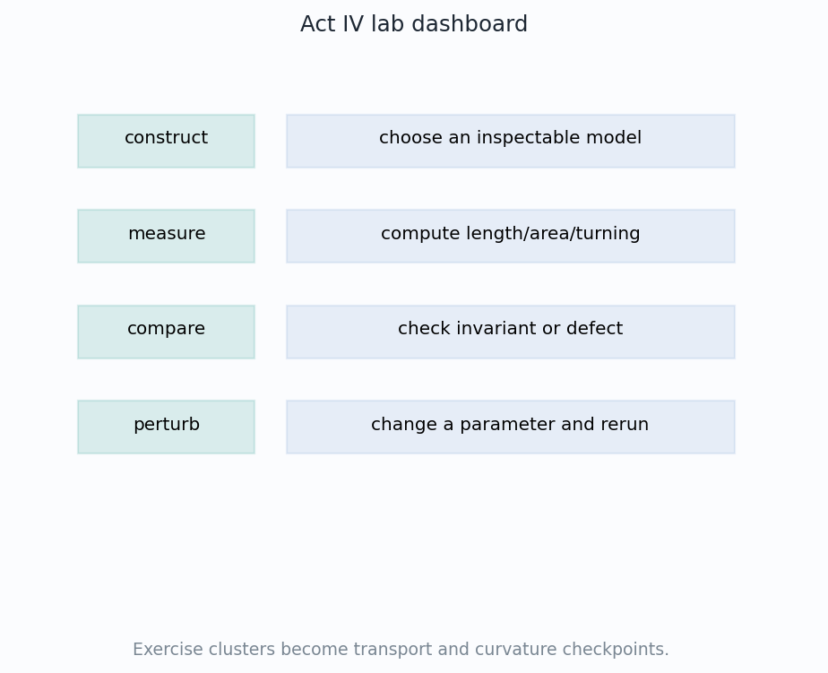
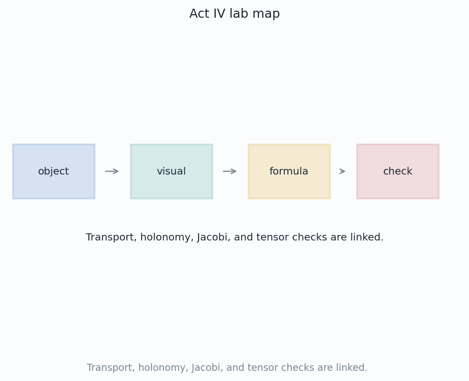
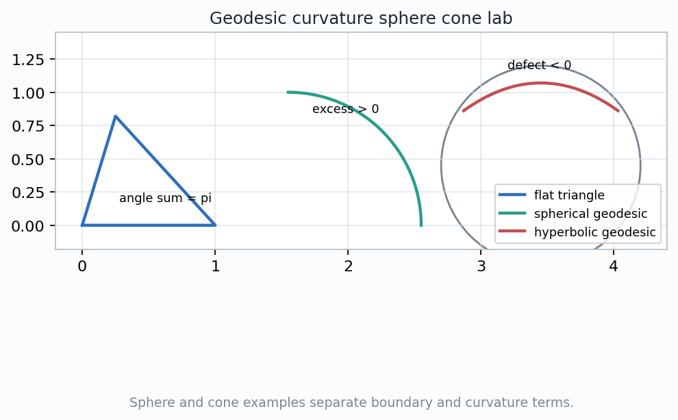
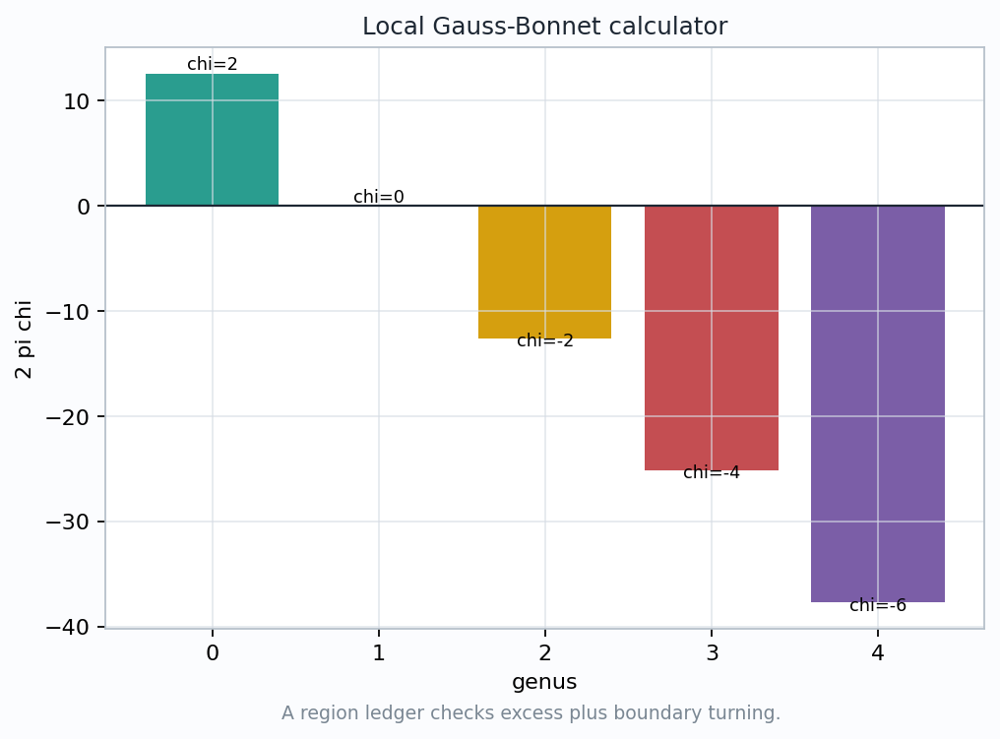
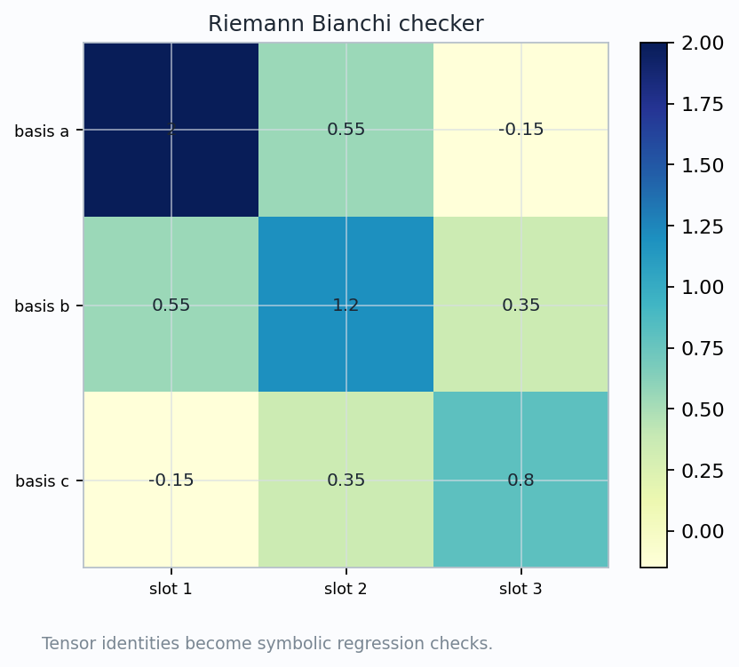

Exercises for Act IV: Transport, Holonomy, Curvature, Spacetime
A review chapter becomes a laboratory: each exercise asks what is being measured, which representation is disposable, and which invariant survives.

object + measurement + invariant + pitfall
The Lab Grammar

1. Name the object
A loop is not a region; a field along a geodesic is not a free vector in one plane; a tensor is not just a table of numbers.
2. Draw the diagnostic
The visual should identify what can be inspected: returned angle, boundary turning, relative acceleration, or failed commutator.
3. Attach the formula
The formula becomes trustworthy only after the geometric role of each term is known.
4. State the check
Use a sign, symmetry, limiting ratio, or conservation law to catch a plausible wrong answer.
Transport Is A Comparison Test
$$\nabla_T V=0$$
The derivative is judged in the tangent bundle, not in a fixed drawing plane.
Diagnostic prompt
What curve is used, what connection compares tangent spaces, and what returned direction should be expected?
Common failure
Sliding an arrow by eye ignores the tangent-plane change. The exercise must state the comparison rule.
Perturbation check
Change coordinates or resample the path. A correct transport rule changes components but preserves the geometric comparison.
Holonomy Turns Loops Into Curvature
$$\Delta\theta \approx \int_R K\,dA$$
Shrinking the loop turns returned angle per area into a local curvature estimate.
What is measured
Transport a tangent vector around a closed curve and compare the final vector with the initial one in the same tangent plane.
What can go wrong
Orientation reversals and inconsistent signs can make a correct magnitude look wrong.
Exercise diagnosis
If the loop encloses no curvature in a flat patch, holonomy should vanish up to numerical or approximation error.
Boundary Curvature Has To Be Accounted For
$$\int_R K\,dA+\int_{\partial R}k_g\,ds+\sum_i \alpha_i=2\pi\chi(R)$$
Interior term
Gaussian curvature accumulates over the chosen region.
Boundary term
Geodesic curvature records how the boundary turns inside the surface.
Corner term
Piecewise smooth boundaries add jumps in tangent direction. They are not optional bookkeeping.

Gauss-Bonnet Is A Ledger

$$2\pi\chi$$
The total target is fixed by the region or surface type.
Curvature
\(\int K\,dA\)
Boundary
\(\int k_g\,ds\)
Corners
\(\sum\alpha_i\)
Topology
\(2\pi\chi\)
Diagnostic use
Identify the region and orientation before computing signs.
Mark which boundary pieces are geodesics, so their \(k_g\) entries vanish.
Use \(\chi\) as the total that catches missing terms.
Geodesic Deviation Reads Curvature Dynamically
$$\frac{D^2J}{dt^2}+R(J,T)T=0$$
Flat
Nearby geodesics coast with constant relative velocity.
Positive
Separation can focus; curvature acts like a restoring term.
Negative
Separation can spread faster than the flat model predicts.
Diagnostic prompt
Given \(J(0)\) and \(DJ/dt(0)\), predict the qualitative behavior before computing components.
Tensor Identities Are Regression Tests
$$R_{ijkl}=-R_{jikl}=-R_{ijlk}=R_{klij}$$
$$R_{ijkl}+R_{iklj}+R_{iljk}=0$$
Why identities matter
They encode the geometry of non-commuting comparisons, not arbitrary array symmetry.
Failure mode
An index-order mistake can still produce plausible numbers while breaking the first Bianchi identity.
Exercise diagnosis
Before interpreting a component, check antisymmetry, pair symmetry, and cyclic cancellation.

Spacetime Uses The Same Diagnostic Habit
$$G_{ab}=\operatorname{Ric}_{ab}-\frac12 Rg_{ab}$$
$$\nabla^aG_{ab}=0$$
Geodesic meaning
Free-fall paths are geodesics of the spacetime metric.
Tidal meaning
Relative acceleration of nearby worldlines is geodesic deviation.
Conservation check
The divergence-free Einstein tensor is the spacetime analogue of a curvature ledger with a built-in consistency test.
The Act IV Exercise Playbook
Transport
Object: tangent vector along a curve. Check: \(\nabla_TV=0\) and coordinate-independent comparison.
Holonomy
Object: closed loop. Check: returned angle scales with enclosed curvature.
Gauss-Bonnet
Object: oriented region. Check: interior, boundary, corners, and \(2\pi\chi\) balance.
Jacobi
Object: geodesic family. Check: curvature predicts focusing or spreading.
Tensor and spacetime extensions
Riemann tensor calculations must pass antisymmetry, pair symmetry, and Bianchi checks.
Spacetime exercises read curvature through tides, Ricci focusing, and divergence-free conservation.
Every exercise should name the representation choice before claiming the invariant.
Act IV is the art of comparing nearby geometric data.
Loops, regions, geodesic families, tensors, and worldlines are different probes of the same curvature story.